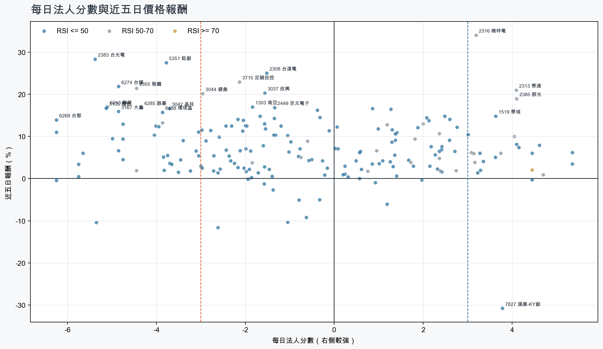
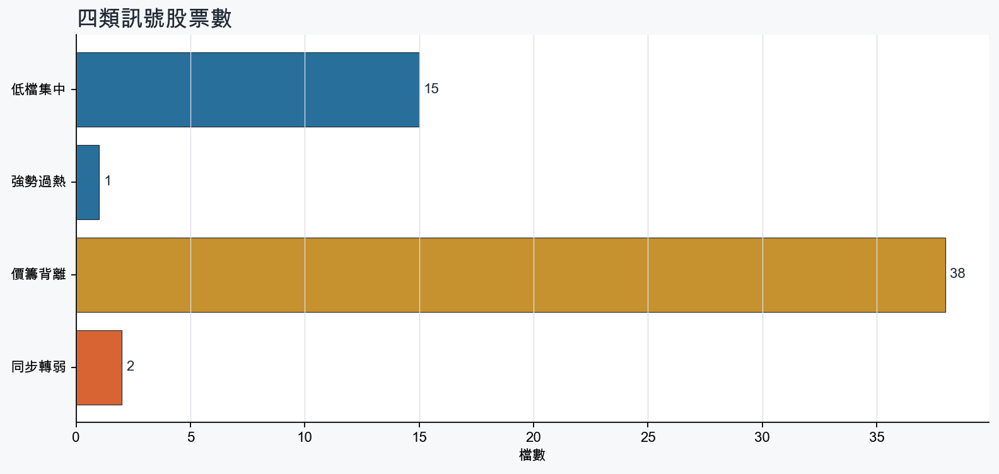
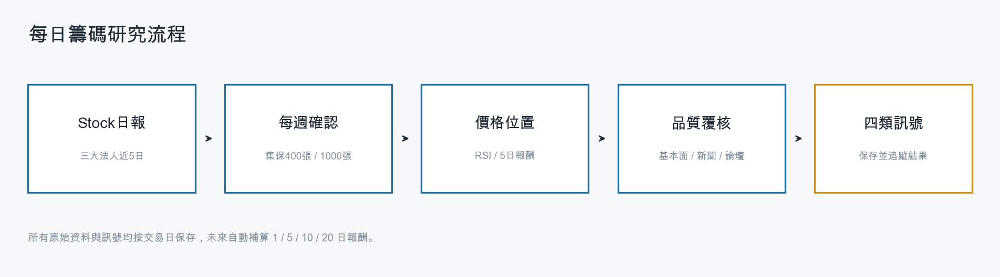
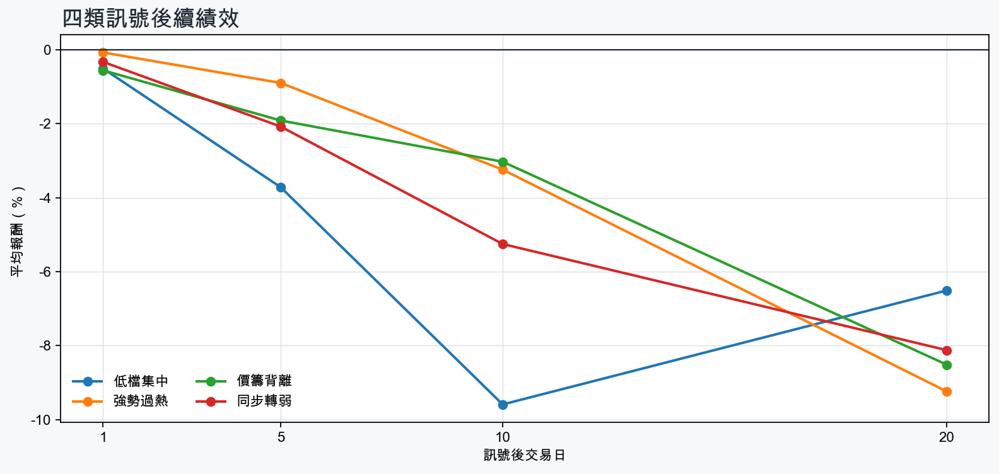

市場情緒中性分歧
近5日法人合計-5,123,812 張
篩選池上漲比例91.7%
籌碼好 / RSI低15 檔
籌碼差 / 價跌2 檔



EPS × PE VALUATION
法人常用的相對估值
顯示保守、基準與樂觀估值帶，不把單一數字包裝成精準目標價。
最新累計 EPS 依季數年化 × 同產業有效 P/E 的 Q25／中位數／Q75。排除本公司、非正 P/E，並以 1.5×IQR 排除離群值。估值帶是公開資料篩選值，不是法人目標價；未使用分析師預估 EPS。
MOOD × MONEY
情緒與籌碼雷達
熱度代表被討論程度；情緒分與法人方向分開計算。熱門不等於適合追價，樣本不足也不硬判多空。
| 股票 | 情緒 | 討論熱度 | 情緒 × 籌碼 | 情緒 × 基本面 |
|---|---|---|---|---|
| 2383 台光電價籌背離 | 中性分歧 +0.0信心 30 | 1000 篇 / 0 留言 / 3 則新聞 | 高熱分歧法人分 -5.4 | 基本面與情緒分歧基本面分 +3.6 |
| 6274 台燿價籌背離 | 中性分歧 +0.0信心 30 | 1000 篇 / 0 留言 / 3 則新聞 | 高熱分歧法人分 -4.8 | 基本面與情緒分歧基本面分 +3.6 |
| 6213 聯茂價籌背離 | 偏多 +29.7信心 30 | 1000 篇 / 0 留言 / 3 則新聞 | 熱門但法人撤退法人分 -5.1 | 基本面與情緒共振基本面分 +3.6 |
| 3167 大量價籌背離 | 偏多 +29.7信心 30 | 1000 篇 / 0 留言 / 3 則新聞 | 熱門但法人撤退法人分 -4.8 | 基本面與情緒共振基本面分 +3.6 |
| 6285 啟碁價籌背離 | 中性分歧 +0.0信心 30 | 1000 篇 / 0 留言 / 3 則新聞 | 高熱分歧法人分 -4.3 | 基本面與情緒分歧基本面分 +3.0 |
| 2355 敬鵬價籌背離 | 偏多 +29.7信心 30 | 1000 篇 / 0 留言 / 3 則新聞 | 熱門但法人撤退法人分 -4.5 | 基本面與情緒共振基本面分 +3.0 |
| 6488 環球晶價籌背離 | 偏空 -29.7信心 30 | 1000 篇 / 0 留言 / 3 則新聞 | 情籌雙弱法人分 -3.9 | 基本面佳、情緒悲觀基本面分 +1.7 |
| 3042 晶技價籌背離 | 中性分歧 +0.0信心 30 | 1000 篇 / 0 留言 / 3 則新聞 | 高熱分歧法人分 -3.7 | 基本面與情緒分歧基本面分 +3.6 |
| 6672 騰輝電子-KY價籌背離 | 中性分歧 +0.0信心 30 | 1000 篇 / 0 留言 / 3 則新聞 | 高熱分歧法人分 -4.8 | 基本面與情緒分歧基本面分 +3.6 |
| 3105 穩懋價籌背離 | 中性分歧 +0.0信心 30 | 1000 篇 / 0 留言 / 3 則新聞 | 高熱分歧法人分 -5.1 | 基本面與情緒分歧基本面分 +3.6 |
| 3189 景碩價籌背離 | 偏多 +29.7信心 30 | 1000 篇 / 0 留言 / 3 則新聞 | 熱門但法人撤退法人分 -4.0 | 基本面與情緒共振基本面分 +3.6 |
| 2610 華航低檔集中 | 偏多 +29.7信心 30 | 1000 篇 / 0 留言 / 3 則新聞 | 情籌共振法人分 +3.2 | 基本面與情緒共振基本面分 +3.0 |
01
籌碼好 / RSI低
優先研究基本面；法人續買且價格止穩時，才適合分批觀察。
| 股票 / 確認狀態 | 每日法人分 | 浦男式近似 | 法人加速度 | RSI / 相對強弱 | 量價確認 | 融資融券 | 每週集保確認 | 基本面 | EPS × 同業 P/E 估值 | 情緒 / 情籌 | 近期消息 | 論壇討論 |
|---|---|---|---|---|---|---|---|---|---|---|---|---|
| 2610 華航等待確認 · 73 分籌碼有訊號，但價格尚未確認 | +3.2法人 +34,812 張 / 3 天 | 接近 · 73中期均線偏多；法人籌碼偏多；買超具延續性；留意未站月線、法人買盤未加速 | -24,436 張近3日 +8,658 / 連續 +1 日 | 49.1相對大盤 +20.2% | 量比 0.46確認分 -0.8收盤跌破20日線；成交量不足；法人買盤減速 | -%融資 - 張 / 融券 - 張 | +4.00 pp1000張 +4.21 pp | 單月營收年增 +22.4%；累計營收年增 +20.2%；2026 Q3 累計 EPS 1.80仍需觀察下一期財報延續性來源：公開資訊觀測站 | 基準 NT$ 21.94估值帶 17.59–31.32現價 21.60 · 估值帶內 · 距基準 +1.6%2026 Q3 累計 EPS 1.80 → 年化 2.40航運業同業 P/E 7.33／9.14／13.05 · n=26 · 信心較高以 Q3 累計 EPS 年化，不等同分析師全年預估來源：TWSE／TPEx 每日本益比 | 偏多 +29.7熱度 100 / 信心 30情籌共振 | 客貨運雙引擎動能強長榮航、華航法人按讚- 日報工商時報 · 11/27華航貨運旺季帶動營收 油價或為絆腳石？Yahoo股市 · 11/24 | 近期沒有明確提及本股的論壇樣本 |
| 9945 潤泰新等待確認 · 60 分籌碼有訊號，但價格尚未確認 | +3.3法人 +3,858 張 / 5 天 | 接近 · 58法人籌碼偏多；買超具延續性；相對大盤偏強；留意未站月線、中期均線未翻多 | -1,509 張近3日 +1,817 / 連續 +8 日 | 46.2相對大盤 +1.5% | 量比 0.55確認分 -2.6收盤跌破20日線；20日線低於60日線；成交量不足；法人買盤減速 | -%融資 - 張 / 融券 - 張 | +0.23 pp1000張 +0.24 pp | 單月營收年增 +47.7%；累計營收年增 +30.9%；2026 Q3 累計 EPS 5.14仍需觀察下一期財報延續性來源：公開資訊觀測站 | 基準 NT$ 79.43估值帶 68.88–116.8現價 25.70 · 低於估值帶 · 距基準 +209.1%2026 Q3 累計 EPS 5.14 → 年化 6.85其他同業 P/E 10.05／11.59／17.05 · n=64 · 信心較高以 Q3 累計 EPS 年化，不等同分析師全年預估來源：TWSE／TPEx 每日本益比 | 樣本不足 +0.0熱度 0 / 信心 0情緒樣本不足 | 近期沒有通過股票語境篩選的新聞 | 近期沒有明確提及本股的論壇樣本 |
| 1519 華城可研究 · 76 分籌碼與價格確認，可列研究清單 | +3.6法人 +763 張 / 5 天 | 接近 · 77站上月線；法人籌碼偏多；法人買盤加速；留意中期均線未翻多、基本面中性 | +314 張近3日 +527 / 連續 +5 日 | 48.0相對大盤 +0.9% | 量比 1.05確認分 +2.420日線低於60日線 | -%融資 - 張 / 融券 - 張 | -0.79 pp1000張 -0.77 pp | 2026 Q3 累計 EPS 10.48；2026 Q3 累計營益率 24.8%單月營收年增 -15.4%；累計營收年增 -2.5%來源：公開資訊觀測站 | 基準 NT$ 249.7估值帶 175.2–420.9現價 484.0 · 高於估值帶 · 距基準 -48.4%2026 Q3 累計 EPS 10.48 → 年化 13.97電機機械同業 P/E 12.54／17.87／30.12 · n=76 · 信心較高以 Q3 累計 EPS 年化，不等同分析師全年預估來源：TWSE／TPEx 每日本益比 | 偏多 +29.7熱度 100 / 信心 30情籌共振 | 【12:02 即時新聞】華城(1519)盤中走強，重電與AI電力題材續成焦點CMoney投資網誌 · 11/27華城部分重電訂單看到2030年，變壓器為何得先排隊？口袋證券 · 11/26 | 近期沒有明確提及本股的論壇樣本 |
| 5871 中租-KY等待確認 · 66 分籌碼有訊號，但價格尚未確認 | +3.3法人 +9,685 張 / 4 天 | 接近 · 69法人籌碼偏多；買超具延續性；明顯強於大盤；留意未站月線、中期均線未翻多 | -1,858 張近3日 +2,022 / 連續 -1 日 | 45.2相對大盤 +7.6% | 量比 2.24確認分 -0.4收盤跌破20日線；20日線低於60日線；法人買盤減速 | -%融資 - 張 / 融券 - 張 | -0.15 pp1000張 +0.26 pp | 單月營收年增 +3.6%；2026 Q3 累計 EPS 8.73；2026 Q3 累計營益率 30.5%累計營收年增 -0.0%來源：公開資訊觀測站 | 基準 NT$ 134.9估值帶 117.0–198.5現價 99.70 · 低於估值帶 · 距基準 +35.3%2026 Q3 累計 EPS 8.73 → 年化 11.64其他同業 P/E 10.05／11.59／17.05 · n=64 · 信心較高以 Q3 累計 EPS 年化，不等同分析師全年預估來源：TWSE／TPEx 每日本益比 | 樣本不足 +0.0熱度 60 / 信心 10情緒樣本不足 | 三大法人買賣超– 外資買超(2882)國泰金、(5871)中租-KY，投信買超(2412)中華電、(2330)台積電，法人合計賣超1230.11億元(1124)｜豐雲學堂2026 年 11 月永豐金證券 · 11/24 | 近期沒有明確提及本股的論壇樣本 |
| 4541 晟田等待確認 · 53 分籌碼有訊號，但價格尚未確認 | +5.3法人 +1,626 張 / 4 天 | 未命中 · 54法人籌碼偏多；買超具延續性；量價健康；留意未站月線、中期均線未翻多 | -1,402 張近3日 +70 / 連續 +1 日 | 35.6相對大盤 -10.8% | 量比 0.95確認分 -5.0收盤跌破20日線；20日線低於60日線；近20日弱於大盤；法人買盤減速 | -0.5%融資 -15 張 / 融券 +1 張 | -0.94 pp1000張 -3.10 pp | 單月營收年增 +21.0%；累計營收年增 +31.2%；2026 Q3 累計 EPS 3.06仍需觀察下一期財報延續性來源：公開資訊觀測站 | 基準 NT$ 47.29估值帶 40.80–69.56現價 43.00 · 估值帶內 · 距基準 +10.0%2026 Q3 累計 EPS 3.06 → 年化 4.08其他同業 P/E 10.00／11.59／17.05 · n=64 · 信心較高以 Q3 累計 EPS 年化，不等同分析師全年預估來源：TWSE／TPEx 每日本益比 | 樣本不足 +9.9熱度 60 / 信心 10情緒樣本不足 | 【11:26 即時新聞】晟田(4541)盤中走強，市場聚焦航太與半導體雙主軸成長CMoney投資網誌 · 11/27 | 近期沒有明確提及本股的論壇樣本 |
| 2481 強茂等待確認 · 46 分籌碼有訊號，但價格尚未確認 | +4.2法人 +4,594 張 / 3 天 | 未命中 · 44法人籌碼偏多；買超具延續性；基本面有支撐；留意未站月線、中期均線未翻多 | -3,573 張近3日 +700 / 連續 -1 日 | 35.1相對大盤 -21.1% | 量比 0.55確認分 -6.3收盤跌破20日線；20日線低於60日線；近20日弱於大盤；成交量不足；法人買盤減速 | -%融資 - 張 / 融券 - 張 | +0.41 pp1000張 +1.06 pp | 單月營收年增 +33.2%；累計營收年增 +21.6%；2026 Q3 累計 EPS 3.73仍需觀察下一期財報延續性來源：公開資訊觀測站 | 基準 NT$ 90.71估值帶 60.77–143.1現價 91.80 · 估值帶內 · 距基準 -1.2%2026 Q3 累計 EPS 3.73 → 年化 4.97半導體同業 P/E 12.22／18.24／28.77 · n=157 · 信心較高以 Q3 累計 EPS 年化，不等同分析師全年預估來源：TWSE／TPEx 每日本益比 | 偏多 +29.7熱度 100 / 信心 30情籌共振 | 強茂：JOYSTAR INTL售VTEAM SIEGFRIED供應鏈Founder Class基金，獲利上看498萬美元台視全球資訊網 · 11/26強茂明年營收成長續高，獲利拚高可期- 新聞MoneyDJ · 11/26 | 近期沒有明確提及本股的論壇樣本 |
| 3013 晟銘電等待確認 · 50 分籌碼有訊號，但價格尚未確認 | +4.1法人 +719 張 / 5 天 | 未命中 · 48法人籌碼偏多；買超具延續性；量價健康；留意未站月線、中期均線未翻多 | -528 張近3日 +558 / 連續 +8 日 | 31.3相對大盤 -14.5% | 量比 0.90確認分 -5.0收盤跌破20日線；20日線低於60日線；近20日弱於大盤；法人買盤減速 | -%融資 - 張 / 融券 - 張 | -0.93 pp1000張 -0.07 pp | 單月營收年增 +19.1%；累計營收年增 +20.1%；2026 Q3 累計 EPS 4.19仍需觀察下一期財報延續性來源：公開資訊觀測站 | 基準 NT$ 74.81估值帶 53.63–92.74現價 59.70 · 估值帶內 · 距基準 +25.3%2026 Q3 累計 EPS 4.19 → 年化 5.59電腦及週邊同業 P/E 9.60／13.39／16.60 · n=82 · 信心較高以 Q3 累計 EPS 年化，不等同分析師全年預估來源：TWSE／TPEx 每日本益比 | 樣本不足 +0.0熱度 0 / 信心 0情緒樣本不足 | 近期沒有通過股票語境篩選的新聞 | 近期沒有明確提及本股的論壇樣本 |
| 0052 富邦科技等待確認 · 64 分籌碼有訊號，但價格尚未確認 | +3.0法人 +19,370 張 / 3 天 | 接近 · 62法人籌碼偏多；法人買盤加速；買超具延續性；留意未站月線、中期均線未翻多 | +16,062 張近3日 +22,249 / 連續 +2 日 | 45.2相對大盤 +1.0% | 量比 0.90確認分 +0.5收盤跌破20日線；20日線低於60日線 | -%融資 - 張 / 融券 - 張 | +0.00 pp1000張 -0.20 pp | 尚無明確成長訊號仍需觀察下一期財報延續性來源：公開資訊觀測站 | 不適用最新財報缺少可年化 EPS | 中性分歧 +0.0熱度 84 / 信心 20高熱分歧 | 0052 富邦科技 - 美伊戰爭，油價大漲，美國國債40兆美元，美國9月cpi 3.... - 股市爆料同學會CMoney · 11/220052富邦科技迎20週年，含積量近七成、近2300%總報酬、破千億規模解析｜豐雲學堂2026 年 11 月永豐金證券 · 09/07 | 近期沒有明確提及本股的論壇樣本 |
| 4939 亞電等待確認 · 46 分籌碼有訊號，但價格尚未確認 | +5.3法人 +1,785 張 / 4 天 | 未命中 · 38法人籌碼偏多；買超具延續性；基本面有支撐；留意未站月線、中期均線未翻多 | -1,495 張近3日 +79 / 連續 +2 日 | 31.7相對大盤 -19.6% | 量比 0.59確認分 -6.3收盤跌破20日線；20日線低於60日線；近20日弱於大盤；成交量不足；法人買盤減速 | +2.6%融資 +87 張 / 融券 +2 張 | +0.04 pp1000張 -1.97 pp | 單月營收年增 +42.3%；累計營收年增 +19.5%；2026 Q3 累計 EPS 0.762026 Q3 累計營益率 6.9%來源：公開資訊觀測站 | 基準 NT$ 19.49估值帶 13.38–28.30現價 44.80 · 高於估值帶 · 距基準 -56.5%2026 Q3 累計 EPS 0.76 → 年化 1.01電子零組件同業 P/E 13.20／19.23／27.93 · n=144 · 信心較高以 Q3 累計 EPS 年化，不等同分析師全年預估來源：TWSE／TPEx 每日本益比 | 中性分歧 +0.0熱度 84 / 信心 20高熱分歧 | 4939 亞電- 【11/26 產業即時新聞】PTFE 族群強勢大漲9.80%：AI 高階材料需求點火，買盤湧入指標股- 股市爆料同學會CMoney · 11/26台虹、亞電在紅什麼？ 連3天飆漲停 全靠這「低損耗神級材料」Yahoo股市 · 08/27 | 近期沒有明確提及本股的論壇樣本 |
| 8096 擎亞等待確認 · 43 分籌碼有訊號，但價格尚未確認 | +4.6法人 +1,218 張 / 4 天 | 未命中 · 44法人籌碼偏多；買超具延續性；基本面有支撐；留意未站月線、中期均線未翻多 | -794 張近3日 +428 / 連續 +2 日 | 41.2相對大盤 -16.0% | 量比 0.58確認分 -6.3收盤跌破20日線；20日線低於60日線；近20日弱於大盤；成交量不足；法人買盤減速 | -1.8%融資 -149 張 / 融券 +25 張 | -0.47 pp1000張 -2.50 pp | 單月營收年增 +370.3%；累計營收年增 +122.7%；2026 Q3 累計 EPS 8.512026 Q3 累計營益率 2.7%來源：公開資訊觀測站 | 基準 NT$ 97.58估值帶 73.75–132.5現價 57.30 · 低於估值帶 · 距基準 +70.3%2026 Q3 累計 EPS 8.51 → 年化 11.35電子通路同業 P/E 6.50／8.60／11.68 · n=27 · 信心較高以 Q3 累計 EPS 年化，不等同分析師全年預估來源：TWSE／TPEx 每日本益比 | 偏多 +19.8熱度 84 / 信心 20情籌混合 | 【12:00 即時新聞】擎亞(8096)股價走強，記憶體與AI伺服器訂單成盤中焦點CMoney投資網誌 · 09/29擎亞 (8096) 做什麼的？三星在台重要合作夥伴！營運亮點與財報觀察全解析口袋證券 · 02/02 | 近期沒有明確提及本股的論壇樣本 |
| 2201 裕隆等待確認 · 49 分籌碼有訊號，但價格尚未確認 | +3.4法人 +1,601 張 / 5 天 | 未命中 · 30法人籌碼偏多；買超具延續性；流動性足夠；留意未站月線、中期均線未翻多 | -163 張近3日 +480 / 連續 +5 日 | 31.0相對大盤 -3.0% | 量比 0.34確認分 -3.3收盤跌破20日線；20日線低於60日線；近20日弱於大盤；成交量不足；法人買盤減速 | -%融資 - 張 / 融券 - 張 | +0.53 pp1000張 +0.31 pp | 2026 Q3 累計 EPS 0.72；2026 Q3 累計營益率 9.6%單月營收年增 -8.0%；累計營收年增 -3.4%來源：公開資訊觀測站 | 基準 NT$ 11.78估值帶 9.34–13.90現價 24.25 · 高於估值帶 · 距基準 -51.4%2026 Q3 累計 EPS 0.72 → 年化 0.96汽車工業同業 P/E 9.73／12.27／14.48 · n=27 · 信心較高以 Q3 累計 EPS 年化，不等同分析師全年預估來源：TWSE／TPEx 每日本益比 | 中性分歧 +0.0熱度 100 / 信心 30高熱分歧 | 裕隆法說》第二季領牌數季增一成「車市已回溫」？總經理許國興：仍有不確定性Yahoo股市 · 08/26裕隆法說》少了納智捷營收差多少？公司：一年約影響40億元Yahoo股市 · 05/20 | 近期沒有明確提及本股的論壇樣本 |
| 3498 陽程等待確認 · 39 分籌碼有訊號，但價格尚未確認 | +4.5法人 +910 張 / 3 天 | 未命中 · 43法人籌碼偏多；買超具延續性；基本面有支撐；留意未站月線、中期均線未翻多 | -1,188 張近3日 -149 / 連續 -1 日 | 28.4相對大盤 -27.6% | 量比 0.69確認分 -5.8收盤跌破20日線；20日線低於60日線；近20日弱於大盤；法人買盤減速 | +2.4%融資 +108 張 / 融券 -29 張 | -4.97 pp1000張 -5.09 pp | 單月營收年增 +212.7%；累計營收年增 +177.2%；2026 Q3 累計 EPS 6.01仍需觀察下一期財報延續性來源：公開資訊觀測站 | 基準 NT$ 131.7估值帶 98.80–184.0現價 141.0 · 估值帶內 · 距基準 -6.6%2026 Q3 累計 EPS 6.01 → 年化 8.01其他電子同業 P/E 12.33／16.43／22.96 · n=69 · 信心較高以 Q3 累計 EPS 年化，不等同分析師全年預估來源：TWSE／TPEx 每日本益比 | 中性分歧 +0.0熱度 100 / 信心 30高熱分歧 | 【09:58 即時新聞】陽程(3498)亮燈漲停，機器人自動化題材成盤中焦點CMoney投資網誌 · 11/24《其他電》注意股：陽程 近5日跌28.57%富聯網 · 11/24 | 近期沒有明確提及本股的論壇樣本 |
| 1809 中釉等待確認 · 32 分籌碼有訊號，但價格尚未確認 | +3.6法人 +737 張 / 4 天 | 未命中 · 30法人籌碼偏多；買超具延續性；流動性足夠；留意未站月線、中期均線未翻多 | -304 張近3日 +89 / 連續 -1 日 | 31.9相對大盤 -14.9% | 量比 0.30確認分 -6.3收盤跌破20日線；20日線低於60日線；近20日弱於大盤；成交量不足；法人買盤減速 | -%融資 - 張 / 融券 - 張 | -1.09 pp1000張 +0.00 pp | 2026 Q3 累計 EPS 0.12單月營收年增 -3.3%；累計營收年增 -1.2%；2026 Q3 累計營益率 0.6%來源：公開資訊觀測站 | 不適用同產業有效 P/E 樣本不足（3 檔） | 中性分歧 +0.0熱度 100 / 信心 30高熱分歧 | 《玻陶股》注意股：中釉 近5日跌25.49%富聯網 · 11/24《玻陶股》注意股：中釉 近5日跌34.15%富聯網 · 11/23 | 近期沒有明確提及本股的論壇樣本 |
| 8042 金山電等待確認 · 33 分籌碼有訊號，但價格尚未確認 | +4.5法人 +1,625 張 / 3 天 | 未命中 · 38法人籌碼偏多；買超具延續性；基本面有支撐；留意未站月線、中期均線未翻多 | -1,574 張近3日 +62 / 連續 +2 日 | 17.8相對大盤 -28.2% | 量比 0.03確認分 -6.3收盤跌破20日線；20日線低於60日線；近20日弱於大盤；成交量不足；法人買盤減速 | -0.3%融資 -12 張 / 融券 +2 張 | -6.48 pp1000張 -6.00 pp | 單月營收年增 +4.5%；累計營收年增 +32.0%；2026 Q3 累計 EPS 3.19仍需觀察下一期財報延續性來源：公開資訊觀測站 | 基準 NT$ 81.79估值帶 56.14–120.3現價 77.50 · 估值帶內 · 距基準 +5.5%2026 Q3 累計 EPS 3.19 → 年化 4.25電子零組件同業 P/E 13.20／19.23／28.29 · n=144 · 信心較高以 Q3 累計 EPS 年化，不等同分析師全年預估來源：TWSE／TPEx 每日本益比 | 中性分歧 +0.0熱度 100 / 信心 30高熱分歧 | 被動元件漲起來！「這檔」強拉漲停挾華新科、禾伸堂、信昌電亮燈 蜜望實衝8%、金山電漲7%FTNN 新聞網 · 11/26【10:41 即時新聞】金山電(8042) 股價走強聚焦AI電源需求CMoney投資網誌 · 11/05 | 近期沒有明確提及本股的論壇樣本 |
| 7827 漢康-KY創等待確認 · 33 分先等基本面止穩 | +3.8法人 +856 張 / 4 天 | 未命中 · 33法人籌碼偏多；買超具延續性；量價健康；留意未站月線、中期均線未翻多 | -893 張近3日 -18 / 連續 +2 日 | 12.3相對大盤 -37.3% | 量比 1.81確認分 -5.0收盤跌破20日線；20日線低於60日線；近20日弱於大盤；法人買盤減速 | -%融資 - 張 / 融券 - 張 | -0.10 pp1000張 +0.32 pp | 尚無明確成長訊號累計營收年增 -91.1%；2026 Q3 累計 EPS -6.61；2026 Q3 累計營益率 -3756.2%來源：公開資訊觀測站 | 不適用年化 EPS 非正數，不適合使用本益比估值 | 中性分歧 +0.0熱度 84 / 信心 20高熱分歧 | 【11/26日股價跌幅】浩鼎(-9.97%)、漢康-KY創(-9.89%)、仁新*(-8.30%)生技投資第一站-Genet觀點 · 11/26【11/24日股價跌幅】漢康-KY創(-9.94%)、雙美(-5.93%)、普生(-5.28%)生技投資第一站-Genet觀點 · 11/25 | 近期沒有明確提及本股的論壇樣本 |
02
籌碼好 / RSI高
趨勢強但不追價，等待量縮、RSI降溫或回測支撐。
| 股票 / 確認狀態 | 每日法人分 | 浦男式近似 | 法人加速度 | RSI / 相對強弱 | 量價確認 | 融資融券 | 每週集保確認 | 基本面 | EPS × 同業 P/E 估值 | 情緒 / 情籌 | 近期消息 | 論壇討論 |
|---|---|---|---|---|---|---|---|---|---|---|---|---|
| 6199 天品等待拉回 · 100 分等拉回，不追價 | +4.5法人 +1,772 張 / 3 天 | 命中 · 96站上月線；中期均線偏多；法人籌碼偏多；留意動能位置非最佳 | +151 張近3日 -477 / 連續 -1 日 | 75.0相對大盤 +20.9% | 量比 0.98確認分 +6.5價格、量能與籌碼未見明顯弱項 | -1.6%融資 -52 張 / 融券 -23 張 | +0.53 pp1000張 +2.06 pp | 單月營收年增 +143.5%；累計營收年增 +369.0%；2026 Q3 累計 EPS 11.60仍需觀察下一期財報延續性來源：公開資訊觀測站 | 基準 NT$ 178.2估值帶 154.7–263.7現價 173.0 · 估值帶內 · 距基準 +3.0%2026 Q3 累計 EPS 11.60 → 年化 15.47其他同業 P/E 10.00／11.52／17.05 · n=64 · 信心較高以 Q3 累計 EPS 年化，不等同分析師全年預估來源：TWSE／TPEx 每日本益比 | 樣本不足 +0.0熱度 0 / 信心 0情緒樣本不足 | 近期沒有通過股票語境篩選的新聞 | 近期沒有明確提及本股的論壇樣本 |
03
籌碼差 / 股價上漲
可能是事件行情或軋空；沒有籌碼改善前避免追高。
| 股票 / 確認狀態 | 每日法人分 | 浦男式近似 | 法人加速度 | RSI / 相對強弱 | 量價確認 | 融資融券 | 每週集保確認 | 基本面 | EPS × 同業 P/E 估值 | 情緒 / 情籌 | 近期消息 | 論壇討論 |
|---|---|---|---|---|---|---|---|---|---|---|---|---|
| 2383 台光電風險警示 · 10 分背離警戒，避免追高 | -5.4法人 -2,533 張 / 0 天 | 未命中 · 36量價健康；基本面有支撐；流動性足夠；留意未站月線、中期均線未翻多 | -2,499 張近3日 -2,271 / 連續 -5 日 | 43.0相對大盤 -9.8% | 量比 0.94確認分 -5.0收盤跌破20日線；20日線低於60日線；近20日弱於大盤；法人買盤減速 | -%融資 - 張 / 融券 - 張 | -1.74 pp1000張 -0.88 pp | 單月營收年增 +203.1%；累計營收年增 +114.1%；2026 Q3 累計 EPS 82.92仍需觀察下一期財報延續性來源：公開資訊觀測站 | 基準 NT$ 2,126估值帶 1,459–3,088現價 3,605 · 高於估值帶 · 距基準 -41.0%2026 Q3 累計 EPS 82.92 → 年化 110.6電子零組件同業 P/E 13.20／19.23／27.93 · n=144 · 信心較高以 Q3 累計 EPS 年化，不等同分析師全年預估來源：TWSE／TPEx 每日本益比 | 中性分歧 +0.0熱度 100 / 信心 30高熱分歧 | PCB一起噴！「這檔」連4漲39.8%攜台光電、欣興、台燿、南電、景碩漲停 臻鼎、聯茂大漲9%Yahoo股市 · 11/26CCL三雄同鎖漲停！台光電、台燿、聯茂誰最值得關注？看懂投資優先級理財周刊 · 11/25 | 近期沒有明確提及本股的論壇樣本 |
| 5351 鈺創風險警示 · 39 分背離警戒，避免追高 | -3.8法人 -1,755 張 / 1 天 | 未命中 · 54站上月線；量價健康；基本面有支撐；留意中期均線未翻多、法人籌碼偏弱 | -3,053 張近3日 -1,190 / 連續 -1 日 | 49.1相對大盤 -2.0% | 量比 1.73確認分 -0.920日線低於60日線；法人買盤減速 | -2.2%融資 -225 張 / 融券 +61 張 | -0.83 pp1000張 -0.95 pp | 單月營收年增 +417.3%；累計營收年增 +479.0%；2026 Q3 累計 EPS 14.28仍需觀察下一期財報延續性來源：公開資訊觀測站 | 基準 NT$ 355.5估值帶 235.7–536.0現價 91.30 · 低於估值帶 · 距基準 +289.4%2026 Q3 累計 EPS 14.28 → 年化 19.04半導體同業 P/E 12.38／18.67／28.15 · n=156 · 信心較高以 Q3 累計 EPS 年化，不等同分析師全年預估來源：TWSE／TPEx 每日本益比 | 偏多 +19.8熱度 84 / 信心 20情籌混合 | 【11:15 即時新聞】鈺創(5351)盤中續揚 聚焦利基型記憶體需求與營收高檔CMoney投資網誌 · 11/27【即時新聞】鈺創董座盧超群看好AI商機！受惠記憶體供需吃緊訂單直達明年CMoney投資網誌 · 11/27 | 近期沒有明確提及本股的論壇樣本 |
| 6274 台燿風險警示 · 4 分背離警戒，避免追高 | -4.8法人 -4,803 張 / 1 天 | 未命中 · 36量價健康；基本面有支撐；流動性足夠；留意未站月線、中期均線未翻多 | -2,208 張近3日 -3,034 / 連續 +1 日 | 37.4相對大盤 -26.9% | 量比 1.04確認分 -5.6收盤跌破20日線；20日線低於60日線；近20日弱於大盤；法人買盤減速；融資單日增幅偏高 | +6.2%融資 +668 張 / 融券 -32 張 | -3.94 pp1000張 -6.37 pp | 單月營收年增 +127.0%；累計營收年增 +102.7%；2026 Q3 累計 EPS 25.41仍需觀察下一期財報延續性來源：公開資訊觀測站 | 基準 NT$ 651.5估值帶 447.2–958.5現價 759.0 · 估值帶內 · 距基準 -14.2%2026 Q3 累計 EPS 25.41 → 年化 33.88電子零組件同業 P/E 13.20／19.23／28.29 · n=144 · 信心較高以 Q3 累計 EPS 年化，不等同分析師全年預估來源：TWSE／TPEx 每日本益比 | 中性分歧 +0.0熱度 100 / 信心 30高熱分歧 | 【即時新聞】台燿(6274)漲停隔日跌近5%，這「5檔概念股」同步遭調節！CMoney投資網誌 · 11/27PCB一起噴！「這檔」連4漲39.8%攜台光電、欣興、台燿、南電、景碩漲停 臻鼎、聯茂大漲9%Yahoo股市 · 11/26 | 近期沒有明確提及本股的論壇樣本 |
| 6213 聯茂風險警示 · 2 分背離警戒，避免追高 | -5.1法人 -3,146 張 / 1 天 | 未命中 · 31基本面有支撐；流動性足夠；留意未站月線、中期均線未翻多 | -3,061 張近3日 -2,860 / 連續 -1 日 | 38.0相對大盤 -26.4% | 量比 0.90確認分 -5.8收盤跌破20日線；20日線低於60日線；近20日弱於大盤；法人買盤減速 | -%融資 - 張 / 融券 - 張 | -5.97 pp1000張 -4.14 pp | 單月營收年增 +119.5%；累計營收年增 +57.2%；2026 Q3 累計 EPS 12.80仍需觀察下一期財報延續性來源：公開資訊觀測站 | 基準 NT$ 328.2估值帶 225.3–476.7現價 416.0 · 估值帶內 · 距基準 -21.1%2026 Q3 累計 EPS 12.80 → 年化 17.07電子零組件同業 P/E 13.20／19.23／27.93 · n=144 · 信心較高以 Q3 累計 EPS 年化，不等同分析師全年預估來源：TWSE／TPEx 每日本益比 | 偏多 +29.7熱度 100 / 信心 30熱門但法人撤退 | 聯茂股價慘跌近腰斬！股民崩潰喊快跑自由財經 · 11/17PCB一起噴！「這檔」連4漲39.8%攜台光電、欣興、台燿、南電、景碩漲停 臻鼎、聯茂大漲9%Yahoo股市 · 11/26 | 近期沒有明確提及本股的論壇樣本 |
| 3167 大量風險警示 · 3 分背離警戒，避免追高 | -4.8法人 -1,873 張 / 1 天 | 未命中 · 31基本面有支撐；流動性足夠；留意未站月線、中期均線未翻多 | -3,256 張近3日 -1,773 / 連續 +1 日 | 39.2相對大盤 -24.3% | 量比 0.88確認分 -5.8收盤跌破20日線；20日線低於60日線；近20日弱於大盤；法人買盤減速 | -%融資 - 張 / 融券 - 張 | -7.96 pp1000張 -3.85 pp | 單月營收年增 +174.9%；累計營收年增 +144.5%；2026 Q3 累計 EPS 19.24仍需觀察下一期財報延續性來源：公開資訊觀測站 | 基準 NT$ 458.4估值帶 321.7–774.2現價 590.0 · 估值帶內 · 距基準 -22.3%2026 Q3 累計 EPS 19.24 → 年化 25.65電機機械同業 P/E 12.54／17.87／30.18 · n=76 · 信心較高以 Q3 累計 EPS 年化，不等同分析師全年預估來源：TWSE／TPEx 每日本益比 | 偏多 +29.7熱度 100 / 信心 30熱門但法人撤退 | 大量Q4營收續戰高明年成長動能有望延續- 新聞MoneyDJ · 11/27大量法說／第三季EPS 9.94元創高、毛利率突破5成，高階CCD機台與TM4訂單延伸至明年，半導體設備同步推進｜股市話題永豐金證券 · 11/11 | 近期沒有明確提及本股的論壇樣本 |
| 6285 啟碁風險警示 · 58 分背離警戒，避免追高 | -4.3法人 -4,330 張 / 2 天 | 接近 · 67站上月線；法人買盤加速；明顯強於大盤；留意中期均線未翻多、法人籌碼偏弱 | +2,473 張近3日 -1,245 / 連續 -1 日 | 56.3相對大盤 +7.4% | 量比 2.76確認分 +4.120日線低於60日線 | -%融資 - 張 / 融券 - 張 | -1.55 pp1000張 -1.63 pp | 單月營收年增 +77.8%；累計營收年增 +44.7%；2026 Q3 累計 EPS 10.102026 Q3 累計營益率 5.1%來源：公開資訊觀測站 | 基準 NT$ 251.7估值帶 166.4–529.8現價 201.0 · 估值帶內 · 距基準 +25.2%2026 Q3 累計 EPS 10.10 → 年化 13.47通信網路同業 P/E 12.36／18.69／39.34 · n=61 · 信心中等以 Q3 累計 EPS 年化，不等同分析師全年預估來源：TWSE／TPEx 每日本益比 | 中性分歧 +0.0熱度 100 / 信心 30高熱分歧 | 【即時新聞】啟碁(6285)爆量衝破200元！這「3檔網通概念股」卻慘遭提款？CMoney投資網誌 · 11/27【即時新聞】啟碁(6285)爆量衝破200元！這「3檔網通概念股」卻慘遭提款？CMoney · 11/27 | 近期沒有明確提及本股的論壇樣本 |
| 2355 敬鵬風險警示 · 61 分背離警戒，避免追高 | -4.5法人 -11,032 張 / 2 天 | 接近 · 75站上月線；中期均線偏多；明顯強於大盤；留意法人籌碼偏弱、法人買盤未加速 | -5,240 張近3日 -7,291 / 連續 -1 日 | 57.8相對大盤 +29.1% | 量比 1.93確認分 +2.5法人買盤減速 | -%融資 - 張 / 融券 - 張 | +7.80 pp1000張 +8.41 pp | 單月營收年增 +33.0%；累計營收年增 +13.5%；2026 Q3 累計 EPS 2.422026 Q3 累計營益率 7.5%來源：公開資訊觀測站 | 基準 NT$ 62.11估值帶 42.59–91.28現價 59.20 · 估值帶內 · 距基準 +4.9%2026 Q3 累計 EPS 2.42 → 年化 3.23電子零組件同業 P/E 13.20／19.25／28.29 · n=144 · 信心較高以 Q3 累計 EPS 年化，不等同分析師全年預估來源：TWSE／TPEx 每日本益比 | 偏多 +29.7熱度 100 / 信心 30熱門但法人撤退 | 敬鵬大陸、泰國擴產UDN · 11/25敬鵬(2355)轉型動能強勁 Q3毛利率創新高、AI工控與航太布局成新引擎理財周刊 · 11/24 | 近期沒有明確提及本股的論壇樣本 |
| 6488 環球晶風險警示 · 12 分背離警戒，避免追高 | -3.9法人 -1,728 張 / 0 天 | 未命中 · 29法人買盤加速；基本面偏正向；流動性足夠；留意未站月線、中期均線未翻多 | +9 張近3日 -618 / 連續 -5 日 | 43.9相對大盤 -19.4% | 量比 0.48確認分 -4.3收盤跌破20日線；20日線低於60日線；近20日弱於大盤；成交量不足 | +1.4%融資 +112 張 / 融券 +5 張 | -3.49 pp1000張 -2.18 pp | 單月營收年增 +11.2%；2026 Q3 累計 EPS 15.00；2026 Q3 累計營益率 9.9%累計營收年增 -3.1%來源：公開資訊觀測站 | 基準 NT$ 364.8估值帶 244.4–559.0現價 511.0 · 估值帶內 · 距基準 -28.6%2026 Q3 累計 EPS 15.00 → 年化 20.00半導體同業 P/E 12.22／18.24／27.95 · n=157 · 信心較高以 Q3 累計 EPS 年化，不等同分析師全年預估來源：TWSE／TPEx 每日本益比 | 偏空 -29.7熱度 100 / 信心 30情籌雙弱 | 盤中速報 - 環球晶(6488)股價拉至漲停，漲停價524.0元，成交5,644張TradingView · 11/26【12:24 即時新聞】環球晶(6488)強攻大漲，AI矽晶圓供給題材受關注CMoney投資網誌 · 11/26 | 近期沒有明確提及本股的論壇樣本 |
| 6269 台郡風險警示 · 2 分背離警戒，避免追高 | -6.2法人 -3,624 張 / 0 天 | 未命中 · 26明顯強於大盤；流動性足夠；留意未站月線、中期均線未翻多 | -2,659 張近3日 -2,633 / 連續 -5 日 | 43.4相對大盤 +4.5% | 量比 0.52確認分 -3.2收盤跌破20日線；20日線低於60日線；成交量不足；法人買盤減速 | -%融資 - 張 / 融券 - 張 | -0.90 pp1000張 -2.31 pp | 單月營收年增 +4.5%；累計營收年增 +1.7%2026 Q3 累計 EPS -4.83；2026 Q3 累計營益率 -11.6%來源：公開資訊觀測站 | 不適用年化 EPS 非正數，不適合使用本益比估值 | 樣本不足 +0.0熱度 60 / 信心 10情緒樣本不足 | 《電零組》注意股：台郡 近5日漲5.38%富聯網 · 11/27 | 近期沒有明確提及本股的論壇樣本 |
| 3042 晶技風險警示 · 16 分背離警戒，避免追高 | -3.7法人 -1,770 張 / 1 天 | 未命中 · 36量價健康；基本面有支撐；流動性足夠；留意未站月線、中期均線未翻多 | -2,705 張近3日 -2,221 / 連續 -4 日 | 43.6相對大盤 -11.7% | 量比 0.93確認分 -5.0收盤跌破20日線；20日線低於60日線；近20日弱於大盤；法人買盤減速 | -%融資 - 張 / 融券 - 張 | -0.83 pp1000張 -1.81 pp | 單月營收年增 +21.9%；累計營收年增 +13.1%；2026 Q3 累計 EPS 5.04仍需觀察下一期財報延續性來源：公開資訊觀測站 | 基準 NT$ 129.2估值帶 88.70–190.1現價 123.0 · 估值帶內 · 距基準 +5.1%2026 Q3 累計 EPS 5.04 → 年化 6.72電子零組件同業 P/E 13.20／19.23／28.29 · n=144 · 信心較高以 Q3 累計 EPS 年化，不等同分析師全年預估來源：TWSE／TPEx 每日本益比 | 中性分歧 +0.0熱度 100 / 信心 30高熱分歧 | 晶技Q4淡季不淡營收續持高，明年營運拚攻頂- 新聞MoneyDJ · 11/26盤中速報 - 晶技(3042)股價拉至漲停，漲停價121.5元，成交315張TradingView · 11/24 | 近期沒有明確提及本股的論壇樣本 |
| 6672 騰輝電子-KY風險警示 · 6 分背離警戒，避免追高 | -4.8法人 -2,300 張 / 2 天 | 未命中 · 46中期均線偏多；量價健康；基本面有支撐；留意未站月線、法人籌碼偏弱 | -1,029 張近3日 -173 / 連續 -1 日 | 35.9相對大盤 -13.0% | 量比 0.96確認分 -5.0收盤跌破20日線；近20日弱於大盤；法人買盤減速 | -%融資 - 張 / 融券 - 張 | -5.48 pp1000張 -6.14 pp | 單月營收年增 +224.4%；累計營收年增 +85.4%；2026 Q3 累計 EPS 10.97仍需觀察下一期財報延續性來源：公開資訊觀測站 | 基準 NT$ 281.3估值帶 193.1–408.5現價 389.0 · 估值帶內 · 距基準 -27.7%2026 Q3 累計 EPS 10.97 → 年化 14.63電子零組件同業 P/E 13.20／19.23／27.93 · n=144 · 信心較高以 Q3 累計 EPS 年化，不等同分析師全年預估來源：TWSE／TPEx 每日本益比 | 中性分歧 +0.0熱度 100 / 信心 30高熱分歧 | 《價值型投資 最新產業研究報告》騰輝電子-KY (6672-TW) 黏合片推升毛利，特殊材料接新單鉅亨網 · 11/26【10:47 即時新聞】騰輝電子-KY(6672)亮燈漲停，AI高階CCL題材獲市場關注CMoney投資網誌 · 11/26 | 近期沒有明確提及本股的論壇樣本 |
| 0053 元大科技市值風險警示 · 0 分背離警戒，避免追高 | -6.2法人 -1,597 張 / 0 天 | 未命中 · 31動能強但未過熱；流動性足夠；留意未站月線、中期均線未翻多 | -905 張近3日 -1,514 / 連續 -9 日 | 45.0相對大盤 -0.1% | 量比 0.70確認分 -3.8收盤跌破20日線；20日線低於60日線；法人買盤減速 | -%融資 - 張 / 融券 - 張 | -10.36 pp1000張 -6.49 pp | 尚無明確成長訊號仍需觀察下一期財報延續性來源：公開資訊觀測站 | 不適用最新財報缺少可年化 EPS | 樣本不足 +0.0熱度 0 / 信心 0情緒樣本不足 | 近期沒有通過股票語境篩選的新聞 | 近期沒有明確提及本股的論壇樣本 |
| 3105 穩懋風險警示 · 16 分背離警戒，避免追高 | -5.1法人 -3,691 張 / 1 天 | 未命中 · 40量價健康；基本面有支撐；動能強但未過熱；留意未站月線、中期均線未翻多 | -2,104 張近3日 -2,155 / 連續 +1 日 | 49.8相對大盤 -10.0% | 量比 1.92確認分 -5.0收盤跌破20日線；20日線低於60日線；近20日弱於大盤；法人買盤減速 | -0.2%融資 -60 張 / 融券 +177 張 | +1.94 pp1000張 -0.22 pp | 單月營收年增 +31.9%；累計營收年增 +32.5%；2026 Q3 累計 EPS 8.12仍需觀察下一期財報延續性來源：公開資訊觀測站 | 基準 NT$ 192.0估值帶 132.3–292.1現價 444.5 · 高於估值帶 · 距基準 -56.8%2026 Q3 累計 EPS 8.12 → 年化 10.83半導體同業 P/E 12.22／17.73／26.98 · n=153 · 信心較高以 Q3 累計 EPS 年化，不等同分析師全年預估來源：TWSE／TPEx 每日本益比 | 中性分歧 +0.0熱度 100 / 信心 30高熱分歧 | 穩懋（3105）做什麼？ SpaceX獲准發射，帶動股價漲停？光通訊、低軌衛星雙軌布局重點整理｜豐雲學堂2026 年 11 月永豐金證券 · 11/263105 穩懋 - 空單下課～不等尾盤了入袋為安 - 股市爆料同學會CMoney · 11/27 | 近期沒有明確提及本股的論壇樣本 |
| 3189 景碩風險警示 · 32 分背離警戒，避免追高 | -4.0法人 -6,356 張 / 2 天 | 未命中 · 37法人買盤加速；量價健康；基本面有支撐；留意未站月線、中期均線未翻多 | +3,294 張近3日 -946 / 連續 +1 日 | 34.1相對大盤 -30.3% | 量比 0.99確認分 -1.0收盤跌破20日線；20日線低於60日線；近20日弱於大盤 | -%融資 - 張 / 融券 - 張 | -3.39 pp1000張 -3.77 pp | 單月營收年增 +49.0%；累計營收年增 +35.4%；2026 Q3 累計 EPS 8.38仍需觀察下一期財報延續性來源：公開資訊觀測站 | 基準 NT$ 198.1估值帶 136.5–301.5現價 528.0 · 高於估值帶 · 距基準 -62.5%2026 Q3 累計 EPS 8.38 → 年化 11.17半導體同業 P/E 12.22／17.73／26.98 · n=153 · 信心較高以 Q3 累計 EPS 年化，不等同分析師全年預估來源：TWSE／TPEx 每日本益比 | 偏多 +29.7熱度 100 / 信心 30熱門但法人撤退 | ABF最慘時刻已過？外資喊景碩目標價950元、訂單看到2030年 未來2年營收估年年大增30％FTNN新聞 · 11/27欣興、南電、景碩、臻鼎... ABF腰斬還能追？外資：最壞已過它訂單看到2030年 - 上市櫃旺得富理財網 · 11/27 | 近期沒有明確提及本股的論壇樣本 |
| 6278 台表科風險警示 · 10 分背離警戒，避免追高 | -5.0法人 -2,369 張 / 0 天 | 未命中 · 33法人買盤加速；基本面有支撐；流動性足夠；留意未站月線、中期均線未翻多 | +117 張近3日 -1,195 / 連續 -8 日 | 41.3相對大盤 -20.6% | 量比 0.42確認分 -3.9收盤跌破20日線；20日線低於60日線；近20日弱於大盤；成交量不足 | -%融資 - 張 / 融券 - 張 | -4.49 pp1000張 -2.42 pp | 單月營收年增 +25.2%；累計營收年增 +8.3%；2026 Q3 累計 EPS 8.312026 Q3 累計營益率 6.9%來源：公開資訊觀測站 | 基準 NT$ 214.4估值帶 123.2–306.9現價 167.5 · 估值帶內 · 距基準 +28.0%2026 Q3 累計 EPS 8.31 → 年化 11.08光電同業 P/E 11.12／19.35／27.70 · n=72 · 信心較高以 Q3 累計 EPS 年化，不等同分析師全年預估來源：TWSE／TPEx 每日本益比 | 樣本不足 +0.0熱度 0 / 信心 0情緒樣本不足 | 近期沒有通過股票語境篩選的新聞 | 近期沒有明確提及本股的論壇樣本 |
04
籌碼差 / 股價下跌
籌碼與價格同弱，原則上迴避，等待法人與大戶同時回補。
| 股票 / 確認狀態 | 每日法人分 | 浦男式近似 | 法人加速度 | RSI / 相對強弱 | 量價確認 | 融資融券 | 每週集保確認 | 基本面 | EPS × 同業 P/E 估值 | 情緒 / 情籌 | 近期消息 | 論壇討論 |
|---|---|---|---|---|---|---|---|---|---|---|---|---|
| 2468 華經風險警示 · 37 分迴避，等待籌碼翻正 | -5.3法人 -6,058 張 / 1 天 | 未命中 · 51中期均線偏多；明顯強於大盤；基本面偏正向；留意未站月線、法人籌碼偏弱 | -98 張近3日 -1,408 / 連續 -1 日 | 48.7相對大盤 +29.4% | 量比 0.49確認分 -0.6收盤跌破20日線；成交量不足；法人買盤減速 | -%融資 - 張 / 融券 - 張 | +8.59 pp1000張 +5.41 pp | 單月營收年增 +20.0%；2026 Q3 累計 EPS 0.88累計營收年增 -2.1%；2026 Q3 累計營益率 3.4%來源：公開資訊觀測站 | 基準 NT$ 16.46估值帶 12.32–20.43現價 61.90 · 高於估值帶 · 距基準 -73.4%2026 Q3 累計 EPS 0.88 → 年化 1.17資訊服務同業 P/E 10.50／14.03／17.41 · n=35 · 信心較高以 Q3 累計 EPS 年化，不等同分析師全年預估來源：TWSE／TPEx 每日本益比 | 樣本不足 +0.0熱度 0 / 信心 0情緒樣本不足 | 近期沒有通過股票語境篩選的新聞 | 近期沒有明確提及本股的論壇樣本 |
| 2465 麗臺風險警示 · 57 分迴避，等待籌碼翻正 | -6.2法人 -2,467 張 / 0 天 | 接近 · 58中期均線偏多；法人買盤加速；明顯強於大盤；留意未站月線、法人籌碼偏弱 | +599 張近3日 -958 / 連續 -6 日 | 44.7相對大盤 +20.9% | 量比 0.58確認分 +3.1收盤跌破20日線；成交量不足 | -%融資 - 張 / 融券 - 張 | +16.47 pp1000張 +16.54 pp | 單月營收年增 +340.6%；累計營收年增 +125.2%；2026 Q3 累計 EPS 6.82仍需觀察下一期財報延續性來源：公開資訊觀測站 | 基準 NT$ 118.2估值帶 87.30–150.9現價 110.0 · 估值帶內 · 距基準 +7.5%2026 Q3 累計 EPS 6.82 → 年化 9.09電腦及週邊同業 P/E 9.60／13.00／16.60 · n=82 · 信心較高以 Q3 累計 EPS 年化，不等同分析師全年預估來源：TWSE／TPEx 每日本益比 | 樣本不足 +0.0熱度 0 / 信心 0情緒樣本不足 | 近期沒有通過股票語境篩選的新聞 | 近期沒有明確提及本股的論壇樣本 |
BACKTEST
長期規律追蹤
每次訊號後自動補算1、5、10、20個交易日報酬；樣本不足時不做結論。

| 訊號組別 | 1日 | 5日 | 10日 | 20日 |
|---|---|---|---|---|
| 低檔集中 | -0.51%勝率 44% / n=1167 | -3.72%勝率 36% / n=972 | -9.59%勝率 21% / n=750 | -6.51%勝率 33% / n=331 |
| 強勢過熱 | -0.08%勝率 43% / n=1288 | -0.90%勝率 42% / n=1277 | -3.24%勝率 35% / n=1254 | -9.24%勝率 28% / n=1189 |
| 價籌背離 | -0.56%勝率 41% / n=1035 | -1.91%勝率 38% / n=1018 | -3.03%勝率 31% / n=996 | -8.51%勝率 29% / n=920 |
| 同步轉弱 | -0.33%勝率 44% / n=3358 | -2.08%勝率 37% / n=3167 | -5.25%勝率 30% / n=2864 | -8.12%勝率 32% / n=2263 |
SENTIMENT
市場消息溫度
新聞與公開論壇只作為情緒代理變數；反諷、同溫層和熱門事件都可能造成偏差，因此同步顯示樣本與信心度。
- 三大法人》外資連10賣再砍296億元、投信連3買，台股單周狂漲3274點 | 下班經濟學 | 財經 - Storm.mgStorm.mg
- 台股重挫近3%，外資狂賣917億，投信為何卻逆勢買超205億？ - CMoneyCMoney
- 台股小漲156點收39308點 外資賣超縮至296億元、投信買超85億 - 天天上新聞天天上新聞
- 外資本週大逃殺！狠砍台股2818億 唯獨狂買「這檔」逾7萬張 - 自由財經自由財經
- 投信、公股史詩級護盤仍擋不住！外資狂賣1,236億台股止穩三關鍵曝- 日報 - 工商時報工商時報
- 台股重挫1926點！ 網見外資賣超嘆：就是在逃命很急 - Yahoo股市Yahoo股市
- 感恩節照樣砍！外資再提款296億 僅靠投信單兵買超撐盤 - TVBS新聞TVBS新聞
- 三大法人買賣超– 外資買超(2882)國泰金、(5871)中租-KY，投信買超(2412)中華電、(2330)台積電，法人合計賣超1230.11億元(1124)｜豐雲學堂2026 年 11 月 - 永豐金證券永豐金證券